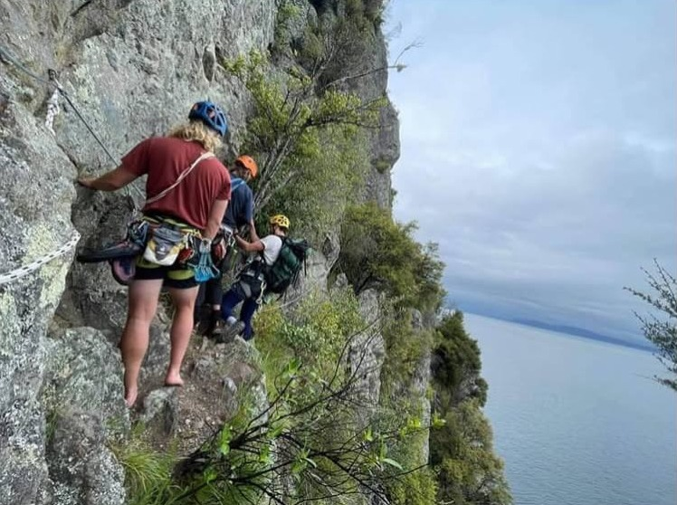

01
Hike in — it’s the simplest way
You can ride, kayak, or take a water taxi — Jim recommends we hike. It’s a beautiful walk, and it sets the scene of a calm adventure. From Kinloch, the K2K track takes about two hours — bush, bluffs, then the drop into the bay. Packs on, lake getting bigger with every saddle. You walk into camp. No marina circus. Just the sound of water and the first look at the walls you’ll live under for a few days.